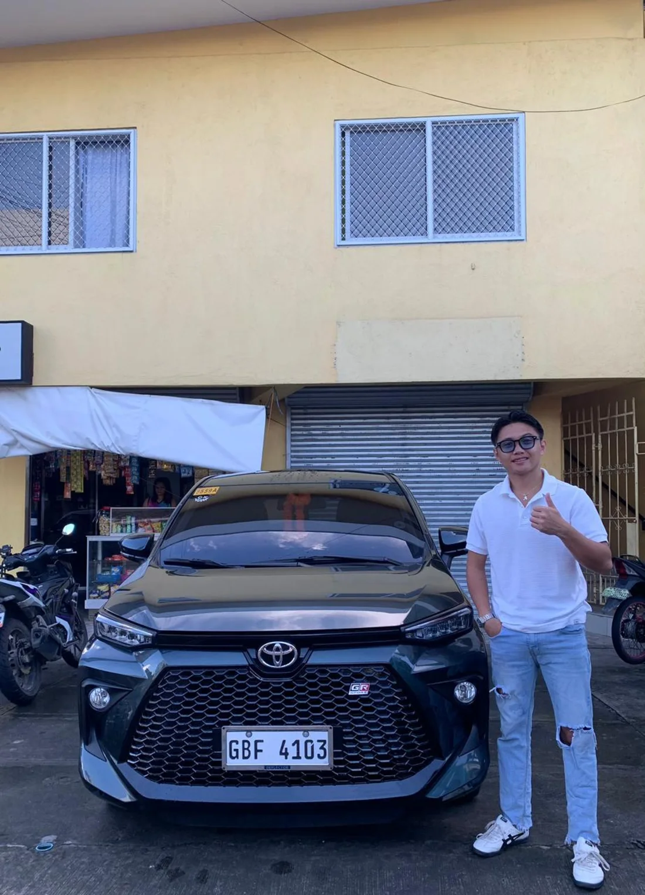

Chocolate Hills in Carmen
Signature Bohol viewpoint, with optional ATV ride.
ATV: PHP 1,400 optionalPrivate Toyota SUV driver in Bohol
Ride with Nino to Chocolate Hills, tarsiers, Loboc River, Panglao Airport, Tagbilaran Port, and custom Bohol stops.
Local driver, flexible day
Nino drives a private Toyota SUV for countryside tours, hotel pickup, port pickup, airport transfer, and custom stops around Bohol. Message him your date, pickup point, guest count, and must-see places.
Countryside route
Driver fee is PHP 3,000 for 1 to 2 guests by Toyota SUV. Attraction fees are paid separately and can change, so confirm them on WhatsApp before pickup.
Signature Bohol viewpoint, with optional ATV ride.
ATV: PHP 1,400 optionalQuiet wildlife stop for seeing Bohol tarsiers responsibly.
Entrance: PHP 180Short nature stop, easy to add between main attractions.
Entrance: PHP 100Shaded road photo stop between countryside highlights.
No entrance feeLunch buffet on the river, one of the easiest family-friendly stops.
Lunch buffet: PHP 1,200 per guestOptional high-view adventure stop near Loboc.
PHP 700 per guest optionalHistoric church stop before returning toward Panglao or Tagbilaran.
No entrance feeQuick stop for photos and a short walk over the river.
Entrance: PHP 50
Why book direct
More than one tour
Private transfer from Tagbilaran Port to Panglao, hotel, or tour route.
Pickup or drop-off at Bohol-Panglao International Airport.
Ask for beaches, food stops, viewpoints, family visits, or a shorter route.
Book on WhatsApp
Send date, pickup point, drop-off point, number of guests, luggage count, and whether you want the countryside tour, airport transfer, port pickup, or a custom Bohol route.
Questions people ask
Yes. Send ferry arrival time, passenger count, and hotel or next stop.
Yes. Airport pickup and drop-off are available. Send flight details on WhatsApp.
No. PHP 3,000 is the Toyota SUV driver fee for 1 to 2 guests. Attraction fees are separate.
Yes. Ask for custom stops, shorter day trips, or transfer plus sightseeing.